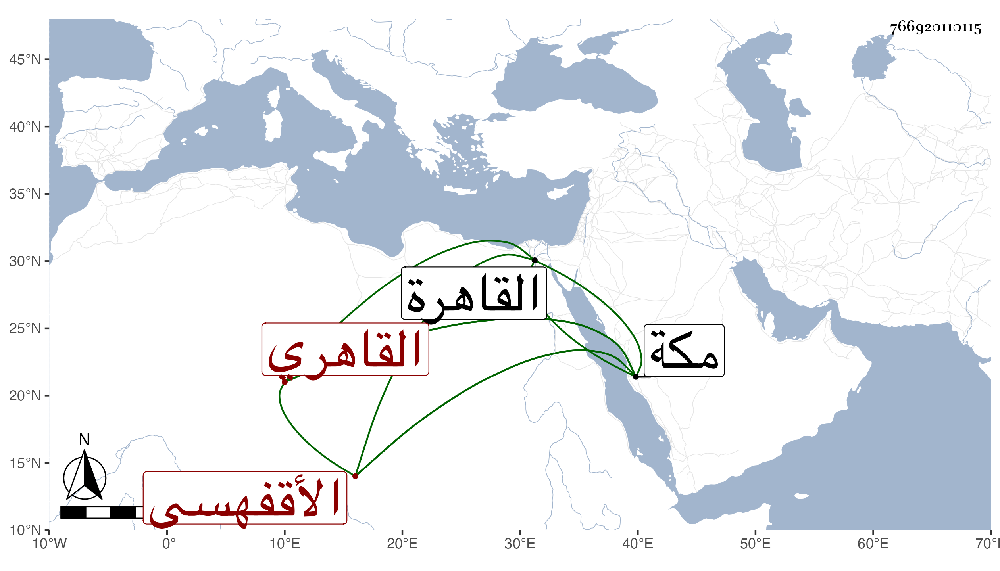

0902Sakhawi.DawLamic.ITO20230111-ara1.EIS1600.766920110115
Biography ID: 766920110115
503
أحمد بن محمد بن محمد بن عبد الرحمن بن عبد الله الشهاب بن التقي بن ناصر الدين الأقفهسي ثم القاهري نزيل مكة أبو الشمس محمد الآتي . ولد بالقاهرة ونشأ بها لفحظ القرآن ومختصر أبي شجاع والملحة وعرضها في سنة سبع وتسعين فما بعدها على جماعة وقدم مكة بعد الثلاثين فقطنها وأدب الأبناء وكان خيرا مباركا ساكنا كثير التلاوة . مات في جمادى الأولى سنة سبع وأربعين ودفن بالمعلاة . ذكره ابن فهد .
